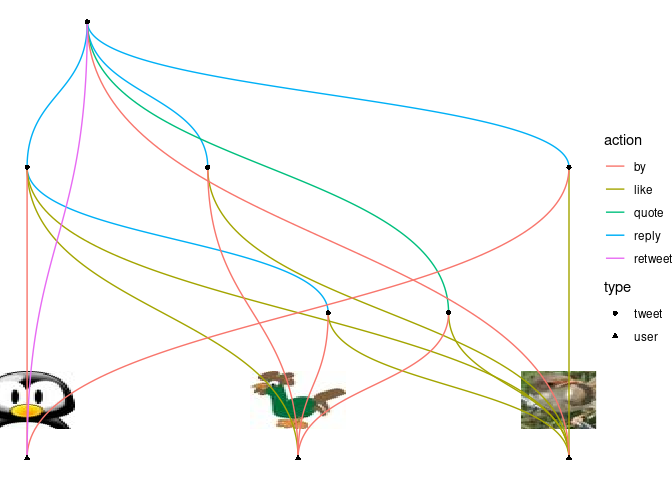

The goal of rtweettree is to recursively scrape a twitter tweet and all replies, quotes, retweets and likes (that the API provides) and visualize them in a network graph. The functionalities to scrape twitter data are heavily based on the excellent rtweet package. The graph network manipulation functionalities rely on the amazing tidygraph package and are visualized with ggraph.
Responsible use
rtweettree should be used in strict accordance with Twitter’s developer terms.
Installation
To get the current development version from Github (with the remotes package):
## install dev version of rtweettree from github
remotes::install_github("UrsWilke/rtweettree")Usage
In order to use rtweettree please refer to the according section of rtweet. It is probably good advice to first feel comfortable with rtweet.
Quick dive-in
To give you a quick understanding of the functionalities of this package, it can be used to scrape data related to a twitter status id main_status_id and all the replies (to replies), quotes, retweets and likes the API provides using rtweet functions under the hood. The status id is the last number in the url of every tweet on twitter.
main_status_id <- "1438481824922181635"
l <- rtweettree_data(main_status_id)This results in a named list of rtweet dataframes:
l
#> $df_main_status
#> # A tibble: 1 × 90
#> user_id status_id created_at screen_name text source
#> <chr> <chr> <dttm> <chr> <chr> <chr>
#> 1 1438476950746636291 143848182… 2021-09-16 12:36:07 rtweetbird1 this is… Twitt…
#> # … with 84 more variables: display_text_width <dbl>, reply_to_status_id <lgl>,
#> # reply_to_user_id <lgl>, reply_to_screen_name <lgl>, is_quote <lgl>,
#> # is_retweet <lgl>, favorite_count <int>, retweet_count <int>,
#> # quote_count <int>, reply_count <int>, hashtags <list>, symbols <list>,
#> # urls_url <list>, urls_t.co <list>, urls_expanded_url <list>,
#> # media_url <list>, media_t.co <list>, media_expanded_url <list>,
#> # media_type <list>, ext_media_url <list>, ext_media_t.co <list>, …
#>
#> $df_tree
#> # A tibble: 1 × 91
#> user_id status_id created_at screen_name text source
#> <chr> <chr> <dttm> <chr> <chr> <chr>
#> 1 1438480252003569671 143848428… 2021-09-16 12:45:55 rtweetbird3 this is… Twitt…
#> # … with 85 more variables: display_text_width <dbl>, reply_to_status_id <chr>,
#> # reply_to_user_id <chr>, reply_to_screen_name <chr>, is_quote <lgl>,
#> # is_retweet <lgl>, favorite_count <int>, retweet_count <int>,
#> # quote_count <int>, reply_count <int>, hashtags <list>, symbols <list>,
#> # urls_url <list>, urls_t.co <list>, urls_expanded_url <list>,
#> # media_url <list>, media_t.co <list>, media_expanded_url <list>,
#> # media_type <list>, ext_media_url <list>, ext_media_t.co <list>, …
#>
#> $df_tls
#> # A tibble: 3 × 90
#> user_id status_id created_at screen_name text source
#> <chr> <chr> <dttm> <chr> <chr> <chr>
#> 1 1438480252003569671 143848428… 2021-09-16 12:45:55 rtweetbird3 this is… Twitt…
#> 2 1438480252003569671 143848356… 2021-09-16 12:43:01 rtweetbird3 @rtweet… Twitt…
#> 3 1438480252003569671 143848345… 2021-09-16 12:42:36 rtweetbird3 @rtweet… Twitt…
#> # … with 84 more variables: display_text_width <dbl>, reply_to_status_id <chr>,
#> # reply_to_user_id <chr>, reply_to_screen_name <chr>, is_quote <lgl>,
#> # is_retweet <lgl>, favorite_count <int>, retweet_count <int>,
#> # quote_count <int>, reply_count <int>, hashtags <list>, symbols <list>,
#> # urls_url <list>, urls_t.co <list>, urls_expanded_url <list>,
#> # media_url <list>, media_t.co <list>, media_expanded_url <list>,
#> # media_type <list>, ext_media_url <list>, ext_media_t.co <list>, …
#>
#> $df_favs
#> # A tibble: 6 × 91
#> user_id status_id created_at screen_name text source
#> * <chr> <chr> <dttm> <chr> <chr> <chr>
#> 1 1438480252003569671 143848428… 2021-09-16 12:45:55 rtweetbird3 this is… Twitt…
#> 2 1438480252003569671 143848356… 2021-09-16 12:43:01 rtweetbird3 @rtweet… Twitt…
#> 3 1438480252003569671 143848345… 2021-09-16 12:42:36 rtweetbird3 @rtweet… Twitt…
#> 4 1438479415550390275 143848243… 2021-09-16 12:38:32 rtweetbird2 @rtweet… Twitt…
#> 5 1438479415550390275 143848230… 2021-09-16 12:38:02 rtweetbird2 @rtweet… Twitt…
#> 6 1438479415550390275 143848243… 2021-09-16 12:38:32 rtweetbird2 @rtweet… Twitt…
#> # … with 85 more variables: display_text_width <dbl>, reply_to_status_id <chr>,
#> # reply_to_user_id <chr>, reply_to_screen_name <chr>, is_quote <lgl>,
#> # is_retweet <lgl>, favorite_count <int>, retweet_count <int>,
#> # quote_count <int>, reply_count <int>, hashtags <list>, symbols <list>,
#> # urls_url <list>, urls_t.co <list>, urls_expanded_url <list>,
#> # media_url <list>, media_t.co <list>, media_expanded_url <list>,
#> # media_type <list>, ext_media_url <list>, ext_media_t.co <list>, …
#>
#> $df_retweets
#> # A tibble: 1 × 90
#> user_id status_id created_at screen_name text source
#> <chr> <chr> <dttm> <chr> <chr> <chr>
#> 1 1438479415550390275 143848258… 2021-09-16 12:39:09 rtweetbird2 this is… Twitt…
#> # … with 84 more variables: display_text_width <int>, reply_to_status_id <lgl>,
#> # reply_to_user_id <lgl>, reply_to_screen_name <lgl>, is_quote <lgl>,
#> # is_retweet <lgl>, favorite_count <int>, retweet_count <int>,
#> # quote_count <int>, reply_count <int>, hashtags <list>, symbols <list>,
#> # urls_url <list>, urls_t.co <list>, urls_expanded_url <list>,
#> # media_url <list>, media_t.co <list>, media_expanded_url <list>,
#> # media_type <list>, ext_media_url <list>, ext_media_t.co <list>, …
#>
#> attr(,"class")
#> [1] "rtweettree_data" "list"You can then visualize this data with:
ggplot2::autoplot(l)
Under the hood, the scraped data is first transformed into a tidygraph::tbl_graph()
g <- rtweettree_tbl_graph(l)
g
#> # A tbl_graph: 9 nodes and 19 edges
#> #
#> # A directed acyclic multigraph with 1 component
#> #
#> # Node Data: 9 × 7 (active)
#> name type screen_name url text label dist_to_center
#> <chr> <chr> <chr> <glue> <chr> <chr> <dbl>
#> 1 1438476950746636291 user rtweetbird1 https:/… <NA> rtweet… 1
#> 2 1438480252003569671 user rtweetbird3 https:/… <NA> rtweet… 2
#> 3 1438479415550390275 user rtweetbird2 https:/… <NA> rtweet… 1
#> 4 1438481824922181635 tweet rtweetbird1 https:/… this is… this i… 0
#> 5 1438483457697591297 tweet rtweetbird3 https:/… @rtweet… @rtwee… 1
#> 6 1438482432030818307 tweet rtweetbird2 https:/… @rtweet… @rtwee… 1
#> # … with 3 more rows
#> #
#> # Edge Data: 19 × 5
#> from to user_id screen_name type
#> <int> <int> <chr> <chr> <chr>
#> 1 4 5 1438480252003569671 rtweetbird3 reply
#> 2 4 6 1438479415550390275 rtweetbird2 reply
#> 3 4 7 1438479415550390275 rtweetbird2 reply
#> # … with 16 more rowswhich is then visualized with ggraph.
A more in-depth example how to create the subtweet network graph from a tweet status_id is shown in the vignette for tree visualization.
vignette("visualize_tree", package = "rtweettree")